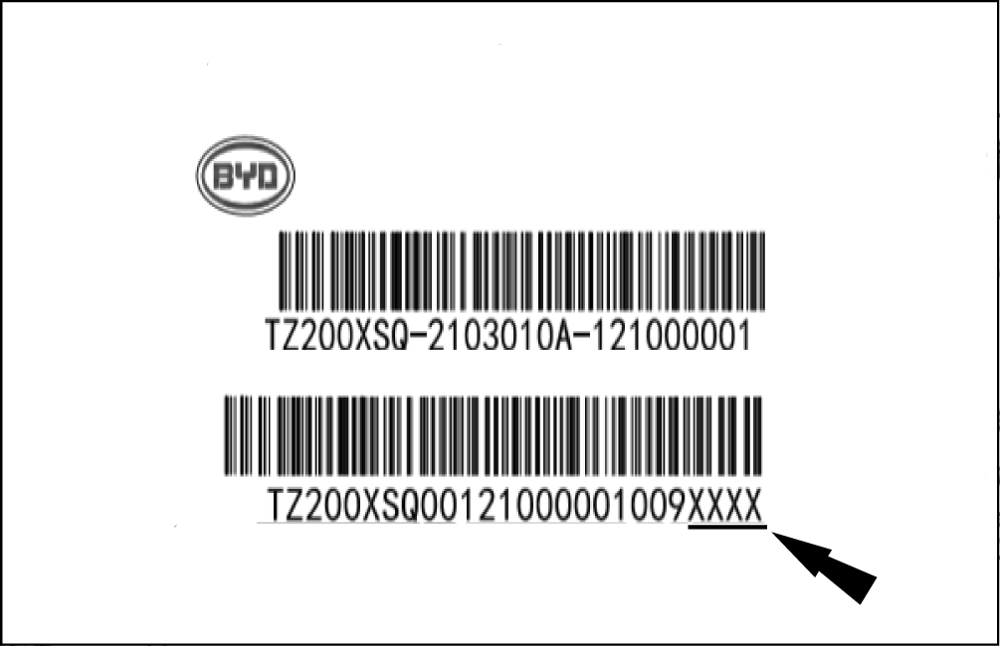

Motor Zero Calibration of Integrated Intelligent Front Drive Assembly

-
After the integrated intelligent front drive control module or the drive motor assembly is replaced, VDS shall be used to execute motor zero position calibration.
-
Before executing the calibration, please check and confirm VDS software has been updated to the latest version.
Motor Zero Calibration
-
Record the zero bar code on the motor, and carry out motor zero calibration with VDS (the latest version) on completion of final assembly.
 -
Set the vehicle power supply to OK, and apply the parking brake.
-
Use a VDS to connect the vehicle OBD interface. Refer to the VDS Instructions
Reminder OBD interface is located at right lower corner of right lower guard plate of instrument panel.
OBD interface is located at right lower corner of right lower guard plate of instrument panel.
-
Select “Vehicle Diagnostic System”.
-
Select “Passenger Vehicles”.
-
Select “EV system”.
-
Select the corresponding model and variant.
-
Select “ECU Module”.
-
Select "Front Drive Motor Control Module", and click the enter button on the right.
-
Select "Data Flow", and check and record the current value of "Front drive Motor Zero Value”.
-
Click the stop button to stop reading the data flow and return to “Front Drive Motor Control Module”.
-
Select “Motor Zero Calibration”
-
Enter the new motor zero bar code.
CautionPay attention to distinguish the uppercase and lowercase when entering letters. -
Click the play button on the left, and check the calibration result.
Reminder-
If the correct barcode is entered, “operation succeeded” will be prompted, in this case, the motor zero position calibration has been completed successfully.
-
If a wrong barcode is entered, “negative response” will be prompted, and the front drive motor zero position value will change to the default value 07BC.
-
-
Set the vehicle power supply to OFF, and then set the vehicle power supply to OK.
-
Return VDS to “Front Drive Motor Control Module”, and reselect “Data Flow”
-
Check the current value of "Front Drive Motor Zero Value”, and check the results.
Caution-
On completion of motor zero calibration, set the vehicle power supply to OFF, and then set to OK, then read the motor zero value after the calibration.
-
The last four digits of the motor zero barcode indicate the zero value. Check this value against the current “front drive motor zero value". Correct, if the two values are consistent.
-
If the correct motor zero barcode is entered, but "negative response” is prompted during calibration, retry. If "negative response” prompted again, record the barcodes of the motor and the motor control module as well as the VIN, and timely report to the responsible person.
-